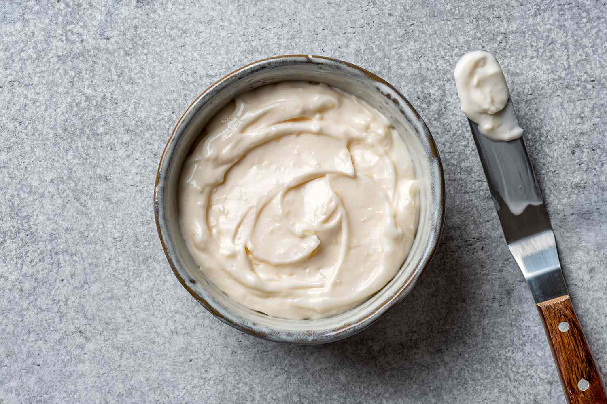

Garlic Mayo

Description
This garlic mayo dip is creamy and savory. It is blended with fresh garlic, a touch of citrus or vinegar, and simple seasonings.
It is rich in flavor and slightly garlicky — perfect for dipping fries, meats, or seafood.
Ingredients
- 500g Real Mayonnaise
- A bit of Garlic Powder
- 250ml All Purpose Cream
- 5 tbsp Lemon Juice
- Minced Fresh Garlic
- A bit of Pepper
Steps
- In a bowl, combine the mayonnaise and all-purpose cream, then mix until smooth
- Add the lemon juice and stir until fully blended
- Add minced fresh garlic and a small amount of garlic powder
- Season with pepper, then mix everything well
- Taste and adjust garlic or lemon juice if needed